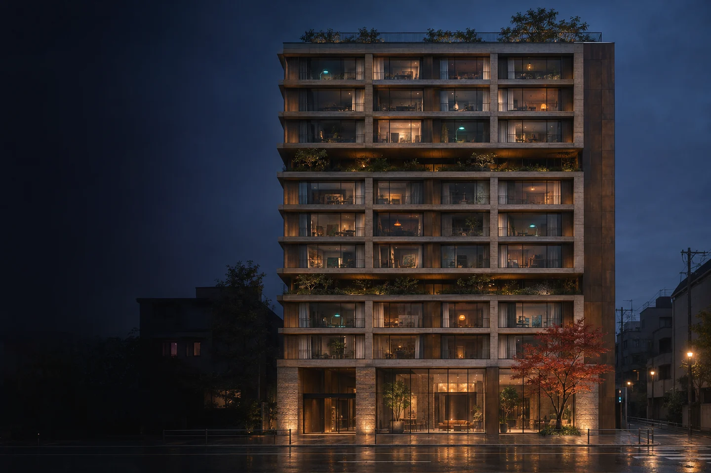
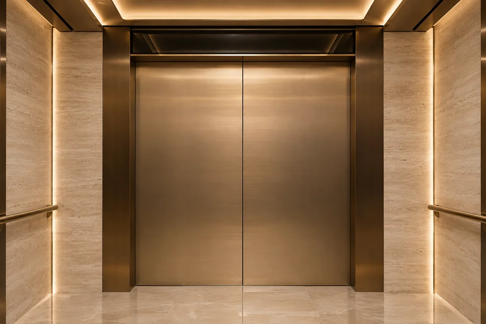
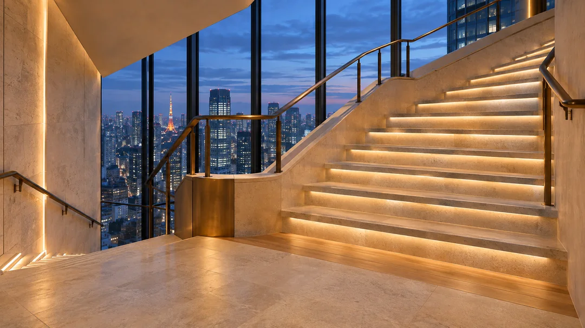

無名S note Atelier
noteの書き手が暮らす12の住居階。隣の部屋を訪ねて、まだ知らない記事に出会う。
全身の透過PNGがおすすめ。輪郭を残して部屋を歩けます。

PUBLIC SPACES
街からエントランスへ。空のラウンジから、建物を支える地下まで。
窓の奥をのぞいて、訪ねたい部屋をタップ。
全景で階の位置を確認し、拡大すると各号室を選べます。
階を選ぶと、その階の号室と空室が表示されます。
空室を確認しています。
ChatGPTで、部屋・歩行アバター・note専用サムネイルの３枚と参加記事を作ります。
ゲーム用アバターと文字なしの横長の部屋画像を１枚ずつ選んでください。専用サムネイルはこの下の品質検査欄へ。画像が不足していれば個別に追加生成できます。

階を移動中

noteの自己紹介欄に確認コードを一時的に入れます。
部屋は空室に戻り、改装・キャラ画像・訪問スタンプが削除されます。同じnote IDで、また入居できます。
部屋を見学するにはJavaScriptを有効にしてください。
登録済みのキャラは再入力不要（ChatGPTで参照できない場合だけ画像を添付）。別のキャラに変更する場合は新しい画像を添付してください。本文イラスト２枚と専用サムネイル１枚を作成します。
イラストができた同じChatGPTチャットに「記事にする」と送るか、上のボタンで記事専用プロンプトをコピーしてください。画像の再生成は不要です。